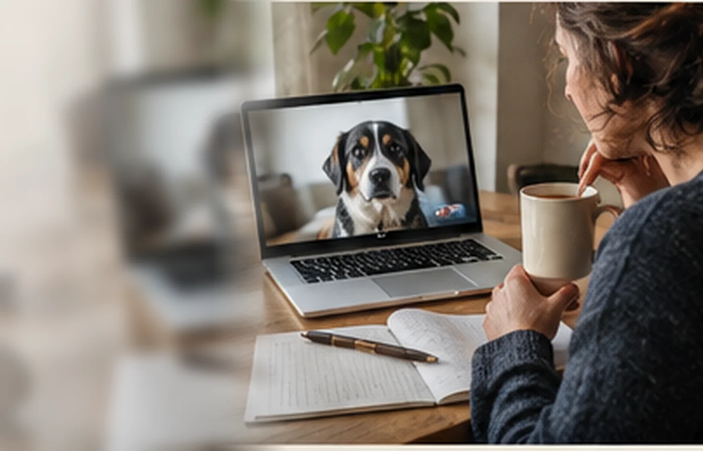
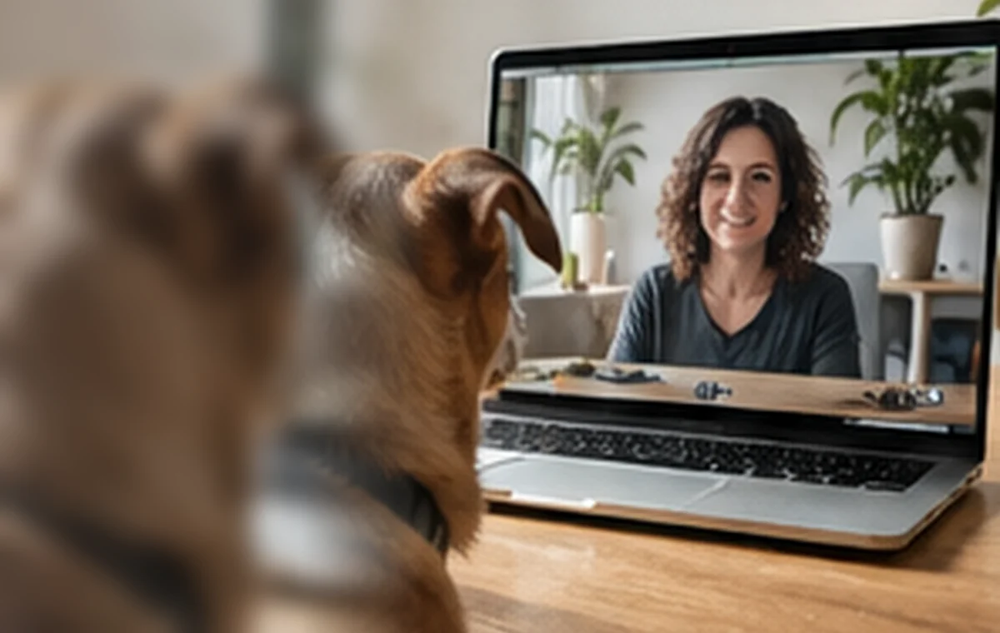

Consulenza a distanza
La distanza cambia lo strumento, non l’attenzione al contesto.
Un confronto online può aiutare a mettere ordine nelle informazioni, osservare la quotidianità e definire i primi passi, anche fuori dalla Liguria.

Situazioni possibili
Un primo orientamento, una preparazione o una verifica.
La modalità online può essere utile in fasi diverse, purché il tipo di richiesta sia compatibile con un lavoro a distanza.
Pre-adozione
Per ragionare su aspettative, organizzazione e caratteristiche del cane prima dell’arrivo.
Nuovo cucciolo
Per preparare spazi, routine e prime esperienze della famiglia.
Quotidianità domestica
Per rileggere abitudini, tempi, gestione degli ambienti e momenti ricorrenti.
Primo inquadramento
Per comprendere la richiesta e decidere quale modalità di lavoro sia più adatta.
Follow-up
Per verificare ciò che è accaduto tra un incontro e l’altro e adattare i passi successivi.
Fuori dalla Liguria
Per accedere a un confronto professionale anche quando la distanza non permette la presenza.
Come si svolge
Prima si chiarisce cosa serve davvero vedere.
La qualità dell’incontro dipende meno dalla piattaforma e più dalla chiarezza con cui vengono raccolte le informazioni.
- 01
Messaggio iniziale
Descrivi cane, contesto, zona e motivo del contatto.
- 02
Verifica dell’idoneità
Valentina chiarisce se l’online può offrire informazioni sufficienti.
- 03
Preparazione
Possono essere richiesti dati sulla routine o brevi materiali concordati.
- 04
Confronto a distanza
Storia, osservazioni e contesto vengono messi in ordine, con spazio per domande concrete.
- 05
Passi successivi
Si definisce ciò che è possibile fare e se servono ulteriori incontri o una modalità differente.

I limiti sono parte del servizio
Sapere quando l’online non basta.
Una consulenza a distanza non sostituisce un intervento in presenza quando servono osservazione diretta, gestione fisica del contesto o valutazioni legate alla sicurezza.
- Non è un servizio di emergenza
- Non sostituisce il medico veterinario
- Può essere convertita in presenza quando necessario
- Materiali e video non devono essere provocati
Domande frequenti
Prima di collegarsi.
La modalità viene valutata sulla base della situazione concreta.
La consulenza online è disponibile fuori dalla Liguria?
Sì, quando la richiesta è compatibile con un lavoro a distanza.
Il cane deve restare davanti alla videocamera?
Non necessariamente. Il confronto può riguardare storia, routine, ambiente e osservazioni della persona.
Posso inviare fotografie o video?
Se utili, Valentina indica quali materiali raccogliere, senza provocare situazioni difficili.
L’online è adatto a ogni situazione?
No. Alcune richieste richiedono osservazione diretta, gestione in presenza o un passaggio veterinario.
Primo contatto
Vuoi capire se l’online è adatto?
Descrivi la situazione e la tua zona. Valentina ti dirà se il confronto a distanza può essere utile oppure se serve una modalità diversa.
Scrivi su WhatsApp ↗Il messaggio è già impostato e puoi modificarlo prima dell’invio.